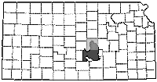

The Equus Beds Google Map Project
- McPherson County, Kansas
Layer Menu
Water Treatment Facilities
Solid Waste Facilities
Contaminated Sites
Contaminated Areas
Clear Map
Key
County Boundary
Contaminated Area

County shown shaded in light grey
Loading....